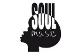

Le hard rock est un genre de rock apparu au milieu des années 1960 essentiellement aux États-Unis et au Royaume-Uni
en même temps que les mouvements blues rock, garage rock et rock psychédélique.
Il se caractérise par une forte utilisation de chants agressifs, de distorsions de guitare, guitare basse, et
batterie ainsi que d'éléments blues, notamment au recours de gammes pentatoniques, le tout accompagné parfois de
pianos et de claviers.
Il devient l'un des genres de rock les plus populaires dans les années 1970 avec des groupes comme Black Sabbath
précurseur du heavy metal, AC/DC, Aerosmith, Blue Öyster Cult, Deep Purple, Led Zeppelin, Rainbow, Scorpions, Kiss,
The Who, Van Halen et Whitesnake. Dans les années 1980, certains groupes de hard rock se sont tournés vers un style
plus pop rock1. Le hard rock atteint un sommet commercial dans la deuxième moitié des années 1980 avec, d'une part,
un nouvel engouement pour les groupes déjà établis et, de l'autre, des groupes comme Bon Jovi et Def Leppard,
associés au glam metal, et Guns N' Roses, dont le son est plus brut. Le genre a commencé à perdre en popularité face
au succès commercial du grunge et plus tard de la Britpop dans les années 1990. Malgré cela, de nombreux groupes de
post-grunge ont adopté un son hard rock et, dans les années 2000, il y eut un regain d'intérêt au sein des groupes
établis. De nouveaux groupes de hard rock ont émergé du garage rock et du post-punk revival.
Title : Lordi - Hard Rock Hallelujah
Soul 
Le terme « soul » (en anglais, soul music qui signifie « musique de l'âme ») est associé à la musique noire
américaine et apparaît pour la première fois dans le titre de deux albums de Ray Charles1 : Soul Brothers en 1958,
et Soul Meeting en 1961. Le développement de la musique soul est stimulé par deux tendances principales :
l'urbanisation du rhythm and blues2 et la sécularisation du gospel3. C'est Ray Charles qui mélangea sa passion pour
le gospel avec les rythmes saccadés du rhythm and blues pour donner naissance à la soul. Se retrouve donc dans la
soul une partie de l’émotion sacrée mêlée à des thèmes profanes, souvent à forte connotation sexuelle. La soul
plonge ses racines dans le pop, le gospel et le negro spiritual. La jeunesse noire l'a utilisée comme un mouvement
contestataire pour réagir face à la communauté blanche et à l'envahissement du rock 'n' roll, qu'il soit blanc ou
noir.
À la fin des années 1950, la volonté de proposer au public blanc des artistes noirs originaux conduit plusieurs
labels à rechercher des versions commercialisables de la « musique noire ». Les deux labels les plus influents sont
alors Stax (près de Memphis) et la Tamla Motown à Détroit4. On les oppose souvent et l’on parle alors de southern
soul5 avec Stax, plus proche des racines (soul rapide et incisive), et de northern soul5, plus dansante et plus
influencée par la pop avec Tamla Motown. De même, en termes de management, Motown — dont le slogan « la musique de
la jeune Amérique » épouse les volontés d'émancipation de l'époque — est le premier label fondé et dirigé par un
noir américain, le redoutable Berry Gordy6,7.
À l'inverse Stax est fondé par un blanc, Jim Stewart8, et nombre de ses plus fameux musiciens de studio sont blancs
eux aussi (Steve Cropper9, Donald « Duck » Dunn, et Tom Dowd).
Title : Gary B.B. Coleman - The Sky is Crying
Country
La musique country est un mélange de musiques traditionnelles développé principalement dans le sud-est des
États-Unis et dans les provinces maritimes du Canada, mais aussi en Europe comme en Irlande ou dans le nord des
Pays-Bas. La country a évolué rapidement dans les années 19201 et reste très populaire aujourd'hui. Différentes
variations du genre ont aussi émergé dans d'autres pays comme en Australie.
Rythmique ou traînante, sentimentale ou émouvante, la country trouve ses origines dans les musiques folkloriques
importées d'Europe — celtiques en particulier — ainsi que dans la tradition musicale chrétienne qui rencontre
l'influence du style gospel des noirs américains. Il s'agit donc d'un style de musique dont les origines sont
multiples et profondément entremêlées, capable de faire cohabiter le chant en yodel (issu d'une petite communauté
suisse allemande des Appalaches) avec des instruments aussi différents que la mandoline italienne, la lap-steel
hawaïenne ou encore le banjo africain, et qui emprunte à des genres comme la musique cadienne, la polka ou le blues.
Il arrive d'ailleurs qu'on parle de la country comme du « blues des blancs », bien qu'elle ait débuté comme une
musique partagée par des musiciens noirs et blancs à une époque où les disques de blues et de country (ou hillbilly)
n'étaient pas radicalement différents : il s'agissait de musiques partageant les valeurs sociales, familiales et
religieuses des petites gens. Par la suite, au même titre que le blues et le rhythm and blues noirs, la country a
largement influencé la musique populaire contemporaine, et notamment le rock.
La musique country, qui compte des millions d'amateurs dans le monde mais surtout aux États-Unis, au Canada et en
Australie, bénéficie aussi d'une certaine popularité en Europe, notamment en Irlande, dans les pays scandinaves et
en Allemagne. De nombreux festivals de musique et de danse y sont consacrés à travers le monde.
Title : Blake Shelton - God's Country
HipHop
Hip hop music or hip-hop music, also known as rap music,[5][6] is a genre of popular music developed in the United
States by inner-city African Americans, Latino Americans[7] and Jamaicans in the Bronx borough of New York City in
the 1970s. It consists of a stylized rhythmic music that commonly accompanies rapping, a rhythmic and rhyming speech
that is chanted.[8] It developed as part of hip hop culture, a subculture defined by four key stylistic elements:
MCing/rapping, DJing/scratching with turntables, break dancing, and graffiti writing.[9][10][11] Other elements
include sampling beats or bass lines from records (or synthesized beats and sounds), and rhythmic beatboxing. While
often used to refer solely to rapping, "hip hop" more properly denotes the practice of the entire
subculture.[12][13] The term hip hop music is sometimes used synonymously with the term rap music,[8][14] though
rapping is not a required component of hip hop music; the genre may also incorporate other elements of hip hop
culture, including DJing, turntablism, scratching, beatboxing, and instrumental tracks.[15][16]
Title : 50 Cent - Candy Shop
About
Le principe de l'indépendance s'explique par une analyse sectorielle avec des sociétés multinationales qui constituent
le centre du secteur (un oligopole de quelques entreprises) qui produisent et surtout distribuent les disques
(phonogrammes) ;
cette étape de la chaîne de valeur étant alors la plus rentable. La production doit quant à elle supporter la majeure
partie du risque artistique9.
Pour un label de production, dès lors qu'un de ses artistes gagne en notoriété, il passe directement ou indirectement,
par le contrat de licence de son producteur, dans le giron de la major qui, à partir d'un certain seuil,
est la seule capable d'assurer sa promotion sur les principaux marchés du disque.
Beaucoup de stars de la pop, du rock mais aussi de la musique classique, sont d'abord signées dans des labels
indépendants (dont le capital est souvent en partie détenu par les majors qui les distribuent et
peuvent ainsi les lier à elles).
Quelques artistes de grande notoriété ont investi dans la création de leur propre label (comme Ray Charles ou Michael
Jackson).
Mario d'Angelo démontre que ce système fonctionne pendant près d'un siècle sur la force capitalistique des entreprises
du « centre » qui grossit en rachetant régulièrement
des entreprises de la « périphérie », multiples, restant de petites sociétés (comparées aux multinationales du centre)
souvent fragiles car plus sujettes à des aléas liés aux succès de leurs artistes et de leurs ventes10.
Ces caractéristiques sont également liées au fait que les maisons indépendantes (souvent avec un unique label
commercial) sont celles qui contribuent le plus à l'innovation artistique
dans l'offre discographique et à introduire de nouveaux genres de musique (par exemple le reggae). La périphérie
constituée des multiples et petites entreprises est dans l'innovation artistique alors que le
centre est dans la commercialisation et la capacité d'internationaliser les ventes (avec le support physique, il y
avait nécessité de fabriquer sur les différents continents pour diminuer les coûts de circulation
des supports et ne faire circuler si possible que les masters et les droits et royalties).
Les labels indépendants présentent en effet une double faiblesse : d'une part, seulement un ou quelques artistes
assurent l'essentiel de leurs ventes et les labels ont des fonds de catalogues limités ;
d'autre part, leurs chiffres d'affaires subit des variations importantes d'une année sur l'autre.
La stratégie de l'entreprise indépendante est ainsi de grandir mais le plus souvent, trop liée à un management
personnalisé, elle a du mal à croître, se diversifier dans ses artistes, ses genres musicaux, ses métiers
(production, distribution, diffusion) et franchit donc difficilement certains seuils de croissance. La vente du label
au meilleur moment fait donc partie de la stratégie d'un indépendant. Ainsi, avant d'être vendu, en 1979,
par son fondateur à Polygram (devenu Universal Music Group), Disques Barclay est le plus important des labels
indépendants français (fondé en 1954 par Eddie Barclay qui a fait émerger des chanteurs emblématiques de la chanson
française)11.
Autre exemple avec Tréma, fondé en 1969 autour d'une compositeur (Jacques Revaux), d'un interprète (Michel Sardou) et
d'un producteur (Régis Talar). Ce label est sous licence Polygram puis Universal Music Group avant d'être racheté par
ce dernier.